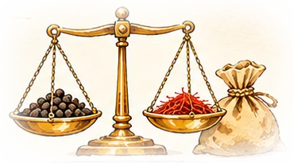
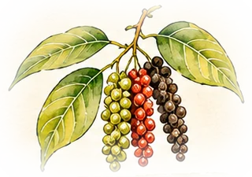
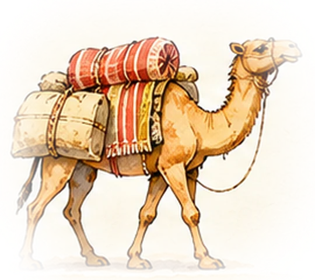
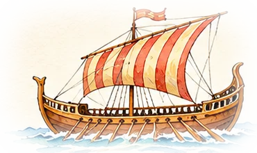

Capítol 5
Ports, intermediaris i preus
Per què el pebre multiplicava el preu pel camí?

En 30 segons
- Un quilo de pebre que a Malabar costava 1 o 2 grams de plata, a Europa en podia costar de 20 a 30.
- El preu no pujava per un sol motiu. Cada tram afegia transport, riscos, impostos i el benefici de cada .
- Els sultans d’Egipte controlaven el pas cap al Mediterrani i cobraven molt alts. Venècia comprava a Alexandria i revenia a tot Europa.
- Qui pogués saltar-se els intermediaris i anar directament a l’origen es faria ric. Aquesta idea explica els viatges de Colom i Gama.
A l’Índia el pebre era barat. A Europa era molt car.
Pel camí, molts comerciants el compraven i el tornaven a vendre més car. També es pagaven impostos i hi havia perills.
Qui anés directament a l’Índia guanyaria molts diners.
L’escala dels preus
Preu aproximat d’un quilo de pebre, en grams de plata, a cada etapa del camí (finals del segle XV, segons l’historiador Michael Pearson).
Quant seria avui un quilo de pebre a cada lloc?
El salt més gran és entre Malabar i Alexandria (unes 8 vegades): el viatge per l’Índic i el mar Roig, els aranzels d’Aden i d’Egipte i els guanys dels mercaders musulmans. En total, de Malabar a la resta d’Europa, el preu es multiplicava per més de deu (uns 16 cops, amb els valors del mig).
La cadena d’intermediaris

1. El pagès
Cultiva el pebre a Malabar i el ven a un mercader local.

2. El mercader de l’Índic
Gujarat o àrab, el porta en dhow fins a Aden. Paga aranzels.

3. La caravana
Pel mar Roig i en camell pel desert fins al Caire i Alexandria. Paga al sultà d’Egipte.

4. El venecià
Compra a Alexandria, el porta en a Venècia i el revèn a mercaders de tot Europa.
5. L’
A Barcelona, Londres o Bruges, el ven a l’engròs i al detall, per unces.
Joc: ets un mercader venecià
Compres 1.000 kg de pebre a Alexandria a 10 g de plata el quilo. Has de portar-los a Venècia i vendre’ls.
1. Tria el vaixell
2. El viatge
- Encara a port, a Alexandria.
Quant costava a València?
Els comptes de la casa ducal de Gandia del juny de 1368 ens diuen el preu d’una lliura de cada espècia, en sous (s) i diners (d). Un sou valia 12 diners.
| Espècia | Preu per lliura | Comparació |
|---|---|---|
| Safrà | 18 s 6 d | |
| Gingebre | 12 s | |
| Canyella | 6 s 2 d | |
| Pebre | 4 s 6 d |
El pebre era la més barata de les espècies cares: per això també era la més venuda. Per passar els sous a dies de feina fem servir el jornal d’un peó de València, uns 2 sous al dia al segle XV: és una estimació. Amb aquest jornal, la lliura de pebre costava ≈ 2,25 dies, igual que a Londres el 1438.
Abans de Gama
L’historiador Frederic Lane va mostrar que el preu del pebre a Venècia ja baixava entre 1430 i 1470, abans de la ruta portuguesa. Els preus depenien de molts factors: guerres, pestes i acords amb el sultà.
Mite
«Els turcs van tancar la ruta de les espècies el 1453 i per això els europeus van buscar camins nous.» No és cert: les espècies continuaven arribant per Egipte i Síria, controlades pels , no pels otomans.